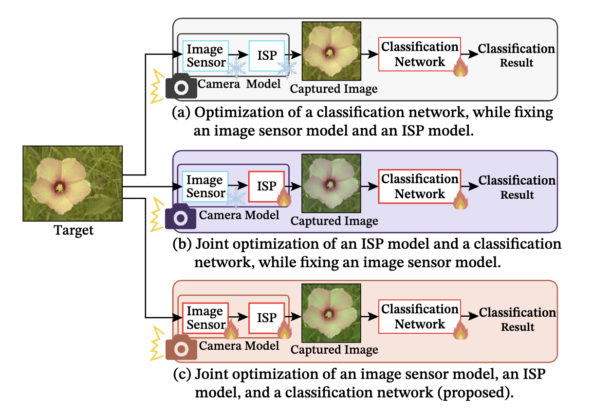
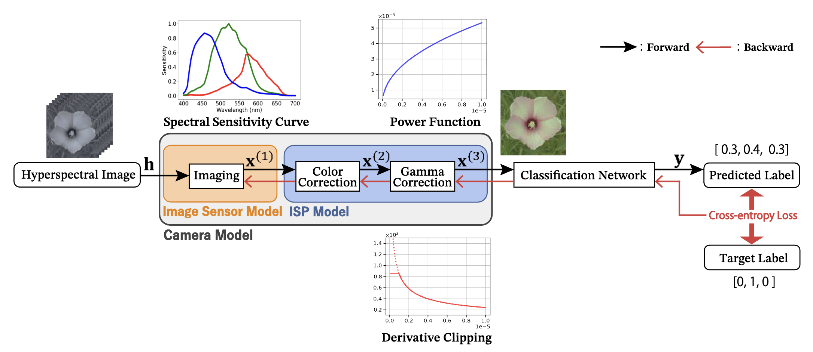
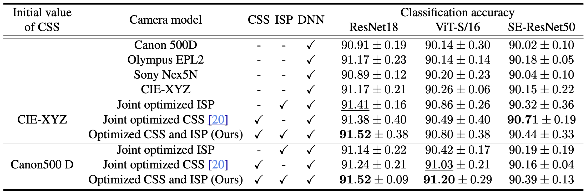
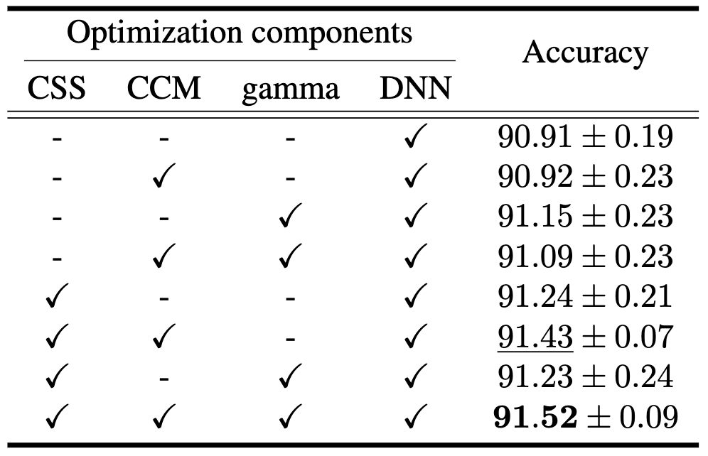

In this paper, we propose joint optimization of a camera model and a deep neural network (DNN) for image classification and object detection tasks. The camera model consists of an image sensor model parameterized by the camera spectral sensitivity (CSS) and an image signal processing (ISP) model. We assume the camera model is composed of a three-sensor imager without a demosaicing process and an ISP with simple color correction and gamma correction. The DNNs then classify or detect objects. A key contribution of this paper is the joint optimization of not only the ISP model and DNN but also the image sensor model. For stable joint optimization, we have implemented a fully differentiable camera model. Therefore, we can jointly optimize the camera model and the DNN. Experimental comparisons with the flower and leaf datasets show that our approach outperforms existing approaches. Furthermore, we demonstrate that our approach is also effective for the object detection task.




@InProceedings{Noboru_2026_WACV,
author = {Noboru, Youta and Ozasa, Yuko and Tanaka, Masayuki},
title = {Joint Optimization of Camera Model and Deep Neural Network for Image Recognition},
booktitle = {Proceedings of the IEEE/CVF Winter Conference on Applications of Computer Vision (WACV)},
month = {March},
year = {2026},
pages = {7626-7635}
}